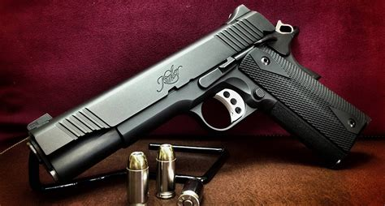
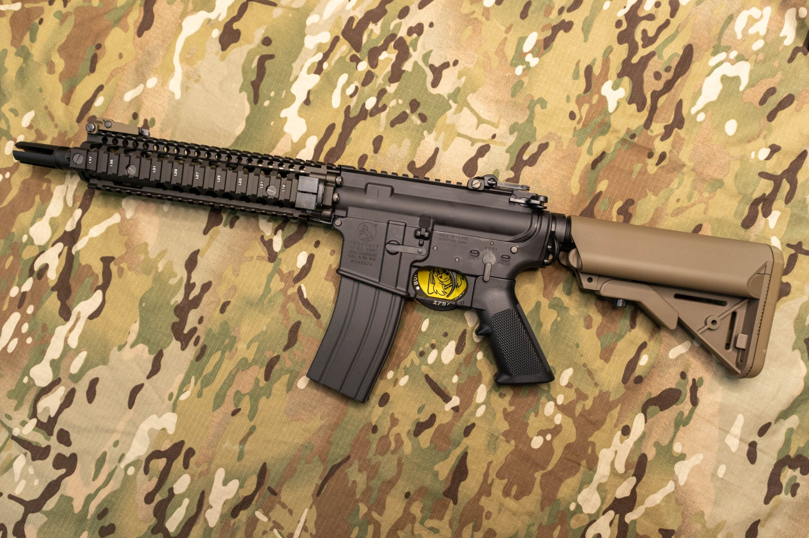

Nazywam się Wróbel Paweł i moim hobby są militaria, wojsko i wszystko co z nim związane oraz motosparty. Od małego miałem z nimi styczność i tak jakoś zostało.
Krótko słowem wstępu. Militaria to ogólne określenie obejmujące przedmioty, sprzęty, broń, umundurowanie oraz inne akcesoria związane z wojskiem, wojną, oraz szeroko pojętym uzbrojeniem. Zainteresowanie militarystyką jest hobby, które koncentruje się na historii wojskowości, rozwoju technologii wojennych, a także na kolekcjonowaniu i badaniu przedmiotów z tym związanych.
Od marca 2020 roku pełnie służbe w Wojskach Obrony Terytorialnej i rozwijam się w tym zakresie. Posiadam również trochę sprzętu o militarnego, tj. mundury, sprzęt survivalowy itd. Dodatkowo wraz z grupką znajomych gram w ASG. Najcześciej w warunkach zurbanizowanych oraz leśnych. W moim posiadaniu jest replika karabinku MK-18 i replika pistoletu Kimber 1911.  